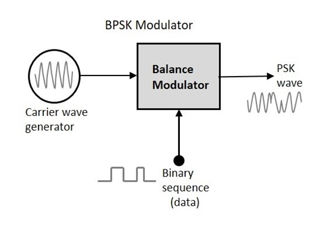
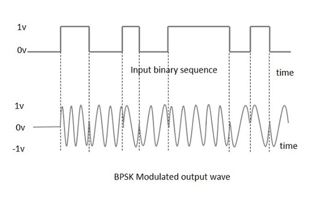
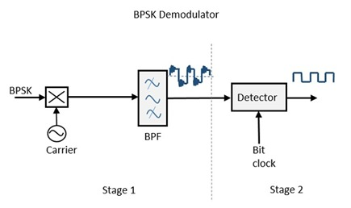

Dr. D.Y Patil Institiute Of Technology ,Pimpri(411018)
Theory (BPSK)
Phase Shift Keying PSK
PSK is the digital modulation technique in which the phase of the carrier signal is changed by varying the sine and cosine inputs at a particular time. PSK technique is widely used for wireless LANs, bio-metric, contactless operations, along with RFID and Bluetooth communications.
PSK is of two types, depending upon the phases the signal gets shifted. They are −
Binary Phase Shift Keying BPSK: BPSK
This is also called as 2-phase PSK or Phase Reversal Keying. In this technique, the sine wave carrier takes two phase reversals such as 0° and 180°. BPSK is basically a Double Side Band Suppressed Carrier DSBSCDSBSC modulation scheme, for message being the digital information.
Quadrature Phase Shift Keying QPSK:QPSK
This is the phase shift keying technique, in which the sine wave carrier takes four phase reversals such as 0°, 90°, 180°, and 270°. If this kind of techniques are further extended, PSK can be done by eight or sixteen values also, depending upon the requirement.
BPSK Modulator
The block diagram of Binary Phase Shift Keying consists of the balance modulator which has the carrier sine wave as one input and the binary sequence as the other input. Following is the diagrammatic representation.

The modulation of BPSK is done using a balance modulator, which multiplies the two signals applied at the input. For a zero binary input, the phase will be 0° and for a high input, the phase reversal is of 180°. Following is the diagrammatic representation of BPSK Modulated output wave along with its given input.
The output sine wave of the modulator will be the direct input carrier or the inverted 180°phaseshifted180°phaseshifted input carrier, which is a function of the data signal.
BPSK Demodulator
The block diagram of BPSK demodulator consists of a mixer with local oscillator circuit, a bandpass filter, a two-input detector circuit. The diagram is as follows.
By recovering the band-limited message signal, with the help of the mixer circuit and the band pass filter, the first stage of demodulation gets completed. The base band signal which is band limited is obtained and this signal is used to regenerate the binary message bit stream.
In the next stage of demodulation, the bit clock rate is needed at the detector circuit to produce the original binary message signal. If the bit rate is a sub-multiple of the carrier frequency, then the bit clock regeneration is simplified. To make the circuit easily understandable, a decision-making circuit may also be inserted at the 2nd stage of detection.